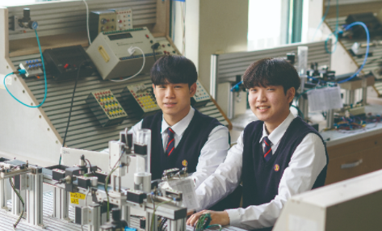

1. 학과 소개
컴퓨터, 전자 산업은 정보기술, 가전 및 각종 IT융합기술등과 같은 첨단 산업기술의 발전을 주도하는 분야로 그
활용범위가 넓고 산업 전반에 걸쳐 필수 불가결한 기술이다. 또한 첨단 기술 집약적이며, 고부가가치를 창출하여 국가
산업 경제의 경쟁력을 높이는데 중요한 분야로 각광 받고 있다.
컴퓨터전자과는 국가 전자 산업 분야에서 기초 실무를 담당할 미래를 여는 IT산업 인재 육성을 목표로 현장실무형
교육과정을 운영하고 있습니다. 교육 목표 달성을 위해 전기·전자 분야의 기초 지식 및 현장 실무능력을 배양하고,
이러한 기초지식을 바탕으로 각종 응용회로 제작 및 고장 수리하며, 마이크로프로세서 및 프로그래밍 교육과정을 운영하고
있습니다. 또한 변화하는 산업 현장을 반영하여 3D프린팅 및 드론 제작 실습을 도입하여 운영중에 있습니다.
2. 전공 과목
전기회로, 디지털논리회로, 전자회로, 프로그래밍, 자동화설비, 전기전자측정, 전자기기개발(NCS실무과목)
3. 실습내용
전기·전자 기초회로 실습, 전자회로 실습, 전자CAD실습, 전자기기실습, 프로그래밍 실습, 3D프린팅 실습,
드론 제작 실습
4. 취득 자격증
전자기기기능사, 전기기능사, 전자CAD기능사, 정보처리기능사, 컴퓨터활용능력
5. 출처
-
경기기계공업고등학교 홈페이지